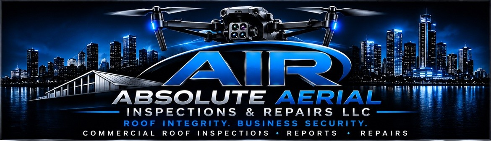
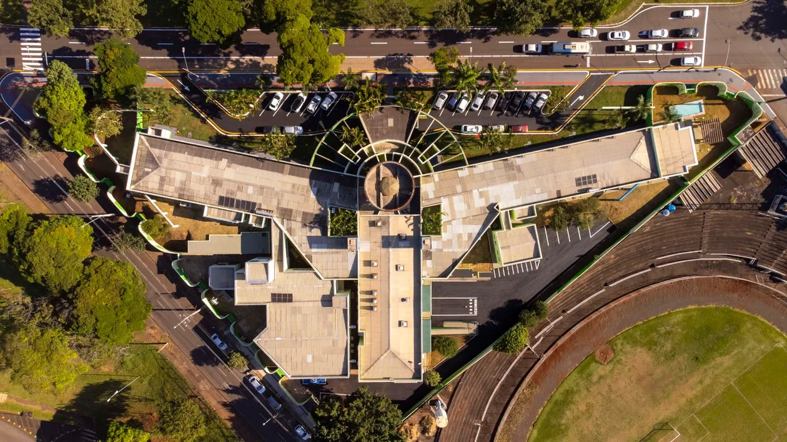

Leaks and trapped moisture can sit under a roof surface for months before anyone notices. By the time water shows up inside the building, the damage underneath is usually much bigger — and much more expensive — than the leak that started it.
Walking a roof is slow, and it misses what’s happening below the surface. Our thermal drone surveys the whole roof from the air, quickly and safely, and shows where moisture is trapped and where the roof is weakest.

A commercial flat roof from above — the view our drone sees on every inspection.
You don’t just get drone pictures. You get a report built for a decision:
A full aerial survey of your commercial roof using the DJI Matrice 4T with thermal imaging.
We locate trapped water under the roof surface — the hidden problem behind most major roof failures.
Photos, findings, and repair priorities written for property managers, owners, and budget approval — not just for roofers.
When a roof needs work, we can do it. Our repair work is backed by real commercial roofing experience.
Repeat inspections over time, so you can watch a roof’s condition change and plan ahead instead of reacting to emergencies.
Every inspection is flown with the DJI Matrice 4T, built for commercial thermal work: a 640×512 thermal camera that sees trapped moisture, 48MP visual cameras for sharp detail, a laser rangefinder, and RTK positioning for precise mapping. It’s the right tool for the job, and it’s the one we fly.
Absolute Aerial Inspections & Repairs pairs thermal drone technology with more than 35 years of hands-on commercial roofing experience. That matters, because a thermal image only helps if someone who knows roofs can tell you what it means, what to fix first, and what can wait.
Both of our pilots are FAA Part 107 licensed. Our inspections are flown safely, without anyone needing to walk the entire roof to find the problem.
Meet the teamWe are based in Belleville and serve Southeast Michigan.
Trapped moisture and wet insulation under the roof surface. A roof can look fine from above and still be holding water underneath — thermal imaging helps reveal those hidden areas so they can be marked and addressed early.
The survey is flown from the air, so we can cover the whole roof quickly and safely without walking every section. That also means less disruption to the building below.
Yes. Both of our pilots hold FAA Part 107 licenses for commercial drone work.
A report with thermal and visual photos, marked problem areas, findings in plain language, repair priorities in order, and your AIR Roof Score from 1 to 100.
Yes. We handle commercial roof repairs and maintenance. If your report shows work that needs doing, we can quote it from the same inspection findings.
Commercial roofs in Southeast Michigan. If you’re not sure whether your building is a fit, call us at 734-658-2384 and we’ll tell you straight.
Call 734-658-2384 or use the contact form. Tell us about the building and the roof, and we’ll schedule the inspection.
A trapped-moisture problem caught early is a repair. The same problem caught late can mean major damage inside the building. Get the truth about your roof before it decides for you.